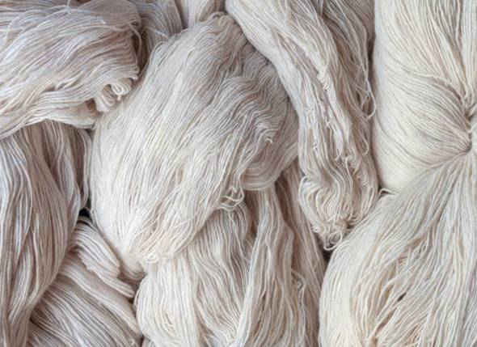
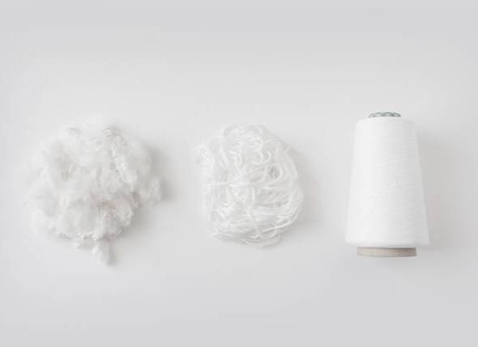
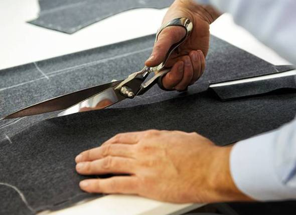
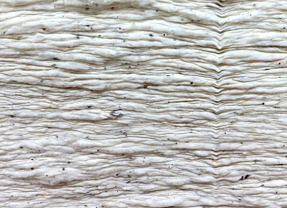
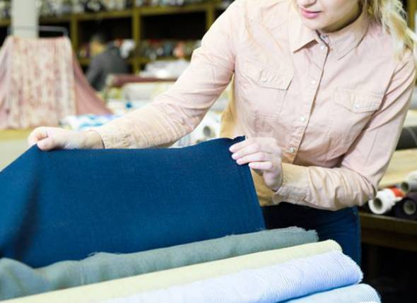

As India’s premier textiles mill, the responsibility towards leaving behind a sustainable environment is always put on a pedestal. We ensure that quality and sustainability go hand in hand. Right across the supply chain, each department is answerable on its sustainability initiatives. Even the smaller steps are recognised, and the right behaviour is incentivised.
Sustainable Products
We have taken an active role in promoting sustainable fibres and are developing a variety of new fabrics by working closely with the fibre manufacturers. We look forward to collaborating with brands and designers who share our vision and concern for the planet and enable them to create sustainable products with our innovative fabric range.

The Three-Pronged Approach
The precise environmental impact of textiles varies significantly depending upon the type of fibre, process, chemicals, water, energy and natural resources used. We have developed a three-pronged approach towards sustainability which encompasses Reduction, Recycling and Responsibility.

Reduction
Reduction of wastages leads to optimum utilisation of available resources and improved efficiency across functions. We have been successful in instilling Reduction as a part of our day-to-day business approach.

Recycling
Recycling is about inventing new ways of putting every resource to a productive and sustainable re-use. This reduces the amount of waste into landfills and incinerators and helps conserve the ever-depleting natural resources and also prevents pollution.

Responsibility
Being an integral part of the community as well as the society for over a hundred years, we at Ruby take it as our prime responsibility to inculcate a taste for sustainable fabrics among consumers and through collaboration with fashion designers and brands.
